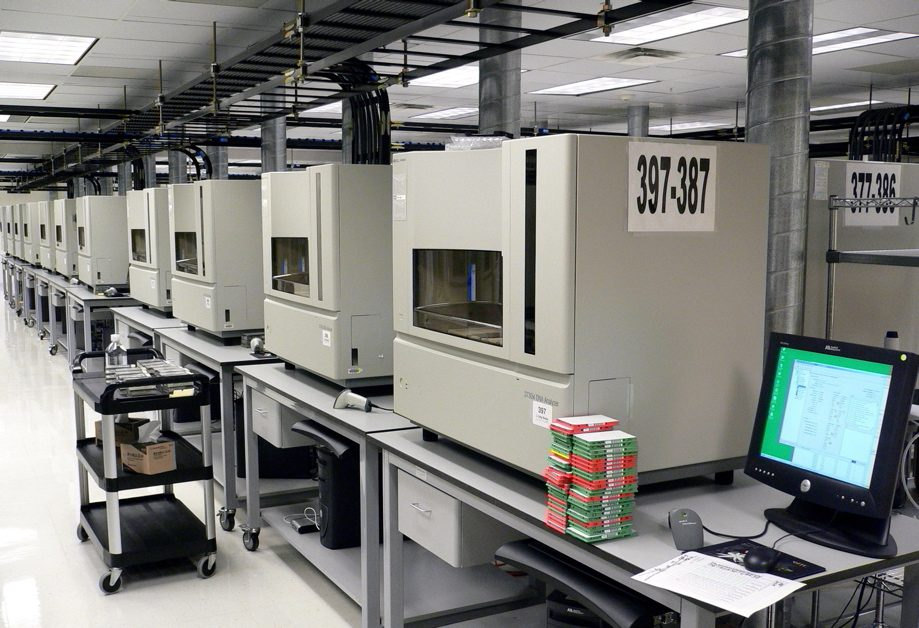

Información divulgativa. No sustituye la valoración de tu equipo médico ni sirve para decidir un tratamiento.


La idea
Durante décadas, el cáncer se trató según el órgano en que nacía. La medicina de precisión añade otra pregunta: ¿qué alteraciones moleculares impulsan este tumor concreto? Si alguna es una diana tratable, se puede elegir un fármaco dirigido contra ella.
Lo que ya funciona
- En el cáncer de pulmón no microcítico avanzado, los pacientes con alteraciones en EGFR, ALK, ROS1 y otros genes reciben pastillas dirigidas que han multiplicado su supervivencia.
- En el cáncer de mama, HER2 y los receptores hormonales deciden el tratamiento desde hace décadas.
- En la leucemia mieloide crónica y el GIST, el imatinib.
- En el melanoma, los inhibidores de BRAF y MEK.
- Tratamientos agnósticos, autorizados por una alteración sea cual sea el órgano: inhibidores de NTRK o inmunoterapia en tumores con inestabilidad de microsatélites.
Sus límites
- Solo una parte de los pacientes tiene una alteración con un tratamiento eficaz disponible. Los grandes estudios estiman que la secuenciación cambia el tratamiento en una minoría de los casos, aunque la proporción crece.
- Los tumores son heterogéneos y evolucionan: aparecen resistencias.
- El mismo cambio puede responder distinto según el órgano (por ejemplo, BRAF en el melanoma y en el colon).
- Para ordenar la evidencia, la ESMO creó la escala ESCAT, que clasifica cada alteración según lo demostrado.
Más allá del ADN
La precisión incluye otros datos: la expresión de proteínas, el entorno inmunitario del tumor, la biopsia líquida, la farmacogenética (cómo metaboliza cada persona los fármacos, como el análisis de DPYD antes de dar fluoropirimidinas) y, cada vez más, la inteligencia artificial aplicada a imágenes y datos.
Ver también: Biomarcadores y perfil molecular, Terapias dirigidas, Geneticapedia: oncología de precisión.
Fuentes
- Mateo J, et al. A framework to rank genomic alterations as targets for cancer precision medicine: the ESMO Scale for Clinical Actionability of molecular Targets (ESCAT). Ann Oncol. 2018;29:1895-1902. doi:10.1093/annonc/mdy263
- Mosele MF, et al. ESMO recommendations for NGS in advanced cancer (2024). Ann Oncol. 2024;35:588-606. doi:10.1016/j.annonc.2024.04.005